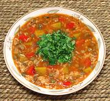

|
Green Pigeon Pea SoupPuerto Rico - Asopao de Gandules | ||||
| Makes: Effort: Sched: DoAhead: |
12 cups *** 1-1/2 hrs Note-8 |
Vegetarian recipes are an alien concept to Puerto Ricans. This adaption of a Puerto Rican chicken soup was composed by a Puerto Rican cookbook writer for a Vegie friend. See Comments. | |||
|
|
2 15oz 1 5 2 5 5 3 1 3/4 2 5 1 1 -------- 1/3 |
cans # oz cl oz oz c c T c T t --- c |
Pigeon Peas (1) Kabocha Squash (2) Onion, red Garlic Bell Pepper, red Chili, mild (3) Culantro Leaf (4) Tomato Sauce (5) Rice, long (6) Olive Oil Broth (7) Salt Pepper -- Finish Cilantro, chopped |
Prep - (45 min)
|